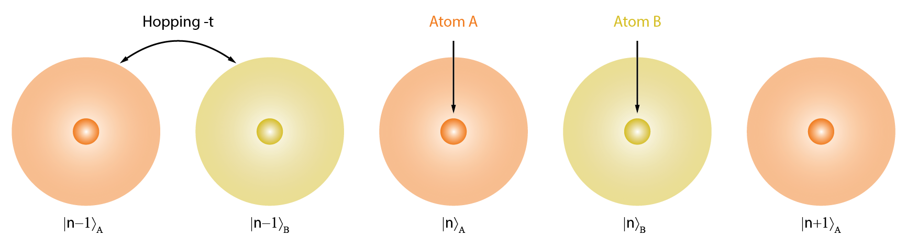

Assignment 2: One-dimensional solids (welcome to the diatomic party)¶
Exercise 1 - Dispersion¶
-
Consider the dispersion curve below:

-
Sketch the group velocity
One needs to sketch the derivative, which could be done by hand or computationally

with the code to compute and plot the derivative shown below:
k = k_vals[1] - k_vals[0] y = nn(k_vals) gradient = np.gradient(y, dk) fig, ax = plt.subplots() ax.plot(k_vals[k_vals<0], gradient[k_vals<0], 'C0'); ax.plot(k_vals[k_vals>.1], gradient[k_vals>.1], 'C0'); ax.set_xlabel(r'$k$'); ax.set_ylabel(r'$\frac{\partial\omega}{\partial k}$'); ax.set_xlim(-2,2) ax.set_title('Group velocity') plt.xticks([-np.pi/a, 0, np.pi/a], [r'$-\pi/a$', 0, r'$\pi/a$']); plt.tight_layout(); plt.savefig('A3-1-gv.pdf', facecolor='white', transparent=False) plt.show() -
Produce a visualisation (e.g. a plot or histogram) of the density of states
A histogram well displays the density of states

which can be compute using the following code:
k_dos = np.linspace(0, np.pi/a, 25) # dk value (2\pi/L) # Make the band plot fig, (ax, ax2) = plt.subplots(ncols=2, sharey=True, figsize=(12, 5)) ax.plot(k_vals, nn(k_vals)); ax.vlines(k_dos, 0, nn(k_dos), colors=(0.5, 0.5, 0.5, 0.5)) ax.hlines( np.hstack(nn(k_dos)), np.hstack(k_dos), np.pi/a, colors=(0.5, 0.5, 0.5, 0.5) ) ax.set_xlabel('$k$') ax.set_ylabel(r'$ω$') ax.set_xticks([0, np.pi/2]) ax.set_xticklabels(['$0$', r'$\pi/a$']) ax.set_yticks([]) ax.set_yticklabels([]) ax.set_xlim(-0.05, max(k) + .05) k = np.linspace(0, np.pi, 1000) omegas = nn(k) ax2.hist(omegas, orientation='horizontal', bins=75) ax2.set_xlabel(r'$g(ω)$') ax2.set_xticks([]) plt.savefig('A3-1-4-dos.pdf', facecolor='white', transparent=False, bbox_inches='tight') plt.show()
-
Exercise 2 - Normal modes of a one-dimensional diatomic chain¶
-
What is the difference between an acoustic mode and optical mode? Describe the motion of atoms in the unit cell for long wavelength oscillations.
In acoustic waves, the dispersion goes to zero and and for small , whereas optical modes have an intercept with where is the speed of light.
In the acoustic case, all atoms in a unit cell move in-phase with a slow spatial modulation, whereas in the optical case, adjacent atoms move out of phase with one another.
-
Derive the dispersion relation for the longitudinal oscillations of a one-dimensional diatomic mass-and-spring crystal with unit cell length and where each unit cell contains one atom of mass and one atom of mass connected by a spring with spring constant .

From the image, we write the position of the particle with mass as and the position of the particle with mass as . We assume that the equilibrium position of is and the equilibrium position is .
We then write the equations of motion for the deviations from the equilibrium positions as and
We then assume solutions of the form
from which we obtain the equations
which simplify to
which defines an eigenvalue problem for . Therefore we must find the roots of the determinant
which yields the equation
and ultimately
-
Determine the frequencies of the acoustic and optical modes at and at the Brillouin zone boundary
At , and therefore the acoustic mode has zero energy whereas the optical mode has energy
At the Brilllouin zone boundary, and so the energies of the two modes are
-
Determine the sound velocity, and show that the group velocity is zero at the zone boundary ()
To find the sound velocity, one must expand around for the acoustic mode and then one end with an equation of the from with
The group velocity is given by and whilst the form of is a bit ugly, if we write , we are interested in the derivative of the function . So by the chain rule,
which means
Now is well behaved around , so we only need look at . Again, is a bit ugly, but is essentially
with constants , and therefore, once again using the chain rule
which goes to zero for and therefore
-
Sketch or plot the dispersion in both the reduced and extended zone scheme
The dispersion in the reduced zone scheme:

The dispersion in the extended zone scheme:

The above plots were computed using the code below:
Much code
# Define a function to return the dispersion def dispersion_diatomic(k, kappa = 1, m1 = 2, m2 = 1, acoustic=True): cons = m1 + m2 sq = np.sqrt((cons ** 2) - (4 * m1 * m2 * np.sin(k * a/2) ** 2)) if acoustic: sq *= -1 return np.sqrt(kappa/(m1*m2) * (cons + sq)/m) scale = 3 # Set the sclae for plotting past the Brillouin zone a = 2 # Set the lattice constant brillouin = np.linspace(-np.pi/a, np.pi/a, 500) # k values in the Brillouin zone ks = brillouin * scale # k values further afield - obviously less well sampled kappa = 1 # Plot the dispersion fig, ax = plt.subplots() ax.plot(brillouin, dispersion_diatomic(brillouin), color = 'C0', label = 'Acoustic') ax.plot(brillouin, dispersion_diatomic(brillouin, acoustic = False), color = 'C1', label = 'Optical') ## The labelling is very tedious, there is little value to be found here # Plot and annotate the Brillouin zone boundary xvals = [-np.pi/a, np.pi/a] for v in xvals: ax.axvline(x=v, color = 'black') offset = 0.3 if v < 0: sign = '-' elif v > 0: sign = '+' offset = -offset # Label the Brillouin range ax.text(v + offset, .1 , f'$k ={sign}\pi/a$', horizontalalignment='center', fontsize=16) # Make the plot pretty ax.set_xlabel('$k$') ax.set_ylabel('$\omega$') ax.set_xlim(1.1*min(xvals),1.1*max(xvals)) plt.legend(bbox_to_anchor=(.5, -.125), loc='lower center', ncol=2) draw_classic_axes(ax) plt.savefig('A3-2-brillouin.svg', facecolor='white', transparent=False, bbox_inches='tight') plt.show() # Make arrays for the first and second Brillouin zones # first Bz brillouin = np.linspace(-np.pi/a, np.pi/a, 500) # second Bz # You may be tempted to have a single array here, but if you do this, your plot will be ugly! # Verify this for yourself: you will find the function "numpy.concatenate" useful. first_ex = np.linspace(-2*np.pi/a, -np.pi/a,250) second_ex = np.flip(first_ex * -1) # Plot the Brillouin zones fig, ax = plt.subplots() ax.plot(brillouin, dispersion_diatomic(brillouin), color = 'C0', label = 'acoustic') ax.plot(first_ex, dispersion_diatomic(first_ex, acoustic = False), color = 'C1', label = 'optical') ax.plot(second_ex, dispersion_diatomic(second_ex, acoustic = False), color = 'C1') # Only use one label to avoid double-tagging ## The labelling is very tedious, there is little value to be found here # Plot and annotate the Brillouin zone boundaries - this is painfully manual xvals = [-2*np.pi/a, -np.pi/a, np.pi/a, 2*np.pi/a] for n, v in enumerate(xvals): ax.axvline(x=v, color = 'black', linestyle = '--') offset = 0.3 if v < 0: sign = '-' if n == 0: text = f'${sign}$'+r'$\frac{2\pi}{a}$' else: n = text = f'${sign}$'+r'$\frac{\pi}{a}$' elif v > 0: sign = '+' offset = -offset if n == 3: text = f'${sign}$'+r'$\frac{2\pi}{a}$' else: n = text = f'${sign}$'+r'$\frac{\pi}{a}$' # Label the Brillouin range text ax.text(v + offset, .1 , text, horizontalalignment='center', fontsize=16) omega_plus = np.sqrt(2*kappa/m) omega_minus = np.sqrt(2*kappa/2*m) gap = (omega_plus + omega_minus) / 2 # Band gap for arrows # Label the 1st Bz ax.text(0, gap - offset/2 , '1st Brillouin zone', horizontalalignment='center', fontsize=16) ax.annotate(text='', xy=(-np.pi/a, gap), xytext=(np.pi/a, gap), arrowprops=dict(arrowstyle='<->', shrinkA=0, shrinkB=0)) # Label the 2nd Bz (<0) ax.text(-3*np.pi/(2*a), gap + 1.75 * offset , '2nd Brillouin\nzone', horizontalalignment='center', fontsize=16) ax.annotate(text='', xy=(-2*np.pi/a, gap-.1), xytext=(-np.pi/a, gap-.1), arrowprops=dict(arrowstyle='<->', shrinkA=0, shrinkB=0)) # Label the 2nd Bz(>0) ax.text(3*np.pi/(2*a), gap + 1.75 * offset , '2nd Brillouin\nzone', horizontalalignment='center', fontsize=16) ax.annotate(text='', xy=(np.pi/a, gap-.1), xytext=(2*np.pi/a, gap-.1), arrowprops=dict(arrowstyle='<->', shrinkA=0, shrinkB=0)) # Make the plot pretty ax.set_xlabel('$k$') ax.set_ylabel('$\omega$') ax.set_title('Extended zone scheme'); plt.legend(bbox_to_anchor=(.5, -.25), loc='lower center', ncol=2) plt.savefig('A3-2-extended.svg', facecolor='white', transparent=False, bbox_inches='tight') plt.show() -
Assuming that there are unit cells, how many different normal modes are there? And how many branches of excitation are there?
If there are unit cells, therefore atoms, there are modes. As there are 2 modes for in the reduced zone scheme, there are two branches
-
What happens when
When the masses as equal, the unit cell is now of size to the Brillouin zone is double in size, and the gap between the branches vanishes, and the system looks identical to the monatomic chain (the image from the extended zone scheme works well here)
Exercise 3 - Diatomic tight binding chain¶
We have seen the both the diatomic chain and the tight-binding chain, so we are going to combine the two. Consider the system shown below

Suppose that the onsite energy of atom is different for atom , that is for being on site and for being on site . Let be the amplitude of the wavefunction on the site of type and be the amplitude of the wavefunction on the site of type . We assume that the hopping is unchanged from the monatomic case.
-
Show that the dispersion curve for electrons is
The unit cell is the distance from an atom to another atom. We assume a trial wavefunction of the form
and put this into the Schrödinger equation and find an effective Schrödinger equation of the form
Assuming solutions of the form
gives
again giving a eigenvalue problem. We solve for the roots of the determinant
which givens the equation
-
Sketch or plot the above dispersion relation in both the reduced and extended zone schemes
The dispersion in the reduced zone scheme:

The dispersion in the extended zone scheme:

The above plots were computed using the code below:
Very code
def energy(k, ea = 5, eb = 3, t = 1, low = True): const = ea - eb sqrt = np.sqrt(const ** 2 + 4 * t ** 2 * (2+2*np.cos(k*a))) if low: sqrt *= -1 return 1/2 * (ea + eb + sqrt) scale = 3 # Set the sclae for plotting past the Brillouin zone a = 2 # Set the lattice constant brillouin = np.linspace(-np.pi/a, np.pi/a, 500) # k values in the Brillouin zone ks = brillouin * scale # k values further afield - obviously less well sampled # Plot the dispersion fig, ax = plt.subplots() ax.plot(brillouin, energy(brillouin), color = 'C0', label = 'Low E') ax.plot(brillouin, energy(brillouin, low = False), color = 'C1', label = 'High E') ## The labelling is very tedious, there is little value to be found here # Plot and annotate the Brillouin zone boundary xvals = [-np.pi/a, np.pi/a] for v in xvals: ax.axvline(x=v, color = 'black') offset = 0.3 if v < 0: sign = '-' elif v > 0: sign = '+' offset = -offset # Label the Brillouin range ax.text(v + offset, 2 , f'$k ={sign}\pi/a$', horizontalalignment='center', fontsize=16) # Make the plot pretty ax.set_xlabel('$k$') ax.set_ylabel('$E$') ax.set_xlim(1.1*min(xvals),1.1*max(xvals)) plt.legend(bbox_to_anchor=(.5, -.25), loc='lower center', ncol=2) plt.savefig('A3-3-brillouin.svg', facecolor='white', transparent=False, bbox_inches='tight') plt.show() # Make arrays for the first and second Brillouin zones # first Bz brillouin = np.linspace(-np.pi/a, np.pi/a, 500) # second Bz # You may be tempted to have a single array here, but if you do this, your plot will be ugly! # Verify this for yourself: you will find the function "numpy.concatenate" useful. first_ex = np.linspace(-2*np.pi/a, -np.pi/a,250) second_ex = np.flip(first_ex * -1) # Plot the Brillouin zones fig, ax = plt.subplots() ax.plot(brillouin, energy(brillouin), color = 'C0', label = 'Low E') ax.plot(first_ex, energy(first_ex, low = False), color = 'C1', label = 'High E') ax.plot(second_ex, energy(second_ex, low = False), color = 'C1') # Only use one label to avoid double-tagging ## The labelling is very tedious, there is little value to be found here # Plot and annotate the Brillouin zone boundaries - this is painfully manual xvals = [-2*np.pi/a, -np.pi/a, np.pi/a, 2*np.pi/a] for n, v in enumerate(xvals): ax.axvline(x=v, color = 'black', linestyle = '--') offset = 0.3 if v < 0: sign = '-' if n == 0: text = f'${sign}$'+r'$\frac{2\pi}{a}$' else: n = text = f'${sign}$'+r'$\frac{\pi}{a}$' elif v > 0: sign = '+' offset = -offset if n == 3: text = f'${sign}$'+r'$\frac{2\pi}{a}$' else: n = text = f'${sign}$'+r'$\frac{\pi}{a}$' # Label the Brillouin range text ax.text(v + offset, 1.75 , text, horizontalalignment='center', fontsize=16) # Make the plot pretty ax.set_xlabel('$k$') ax.set_ylabel('$\omega$') ax.set_title('Extended zone scheme'); plt.legend(bbox_to_anchor=(.5, -.25), loc='lower center', ncol=2) plt.savefig('A3-3-extended.svg', facecolor='white', transparent=False, bbox_inches='tight') plt.show() -
What is the effective mass of an electron near the bottom of the lower band?
To find the effective mass, we expand the energy around the minimum which gives
which set equal to and find
-
If each atom ( and ) are monovalent, is the system a conductor or insulator? Justify your response
If each atom is monovalent, there are now two electrons per unit cell, and this fills exactly the lower band and therefore the system is insulating.
-
Consider the material LiF, and use the above results to justify why it is observed to be an excellent insulator.
For LiF we can expect a much lower energy for electrons on F than on Li (F has a large electron affinity, Li has a low ionization energy). So we can set . What happens in this limit is that the bands are extremely far apart – thus a very good insulator.
If you are really keen, one can look at the eigenvectors in the lower band, and one will find that they are almost completely on the lower energy atoms. Thus the free electron is transferred almost completely from the higher to the lower energy atom.
Exercise 4 - Two-dimensional crystal structure¶
Consider the following two-dimensional diatomic crystal:

-
Sketch the Wigner-Seitz unit cell and two other possible primitive unit cells of the crystal
An example of two possible primitive primative cells are shown below, along with the Wigner-Seitz cell, which is unique.

-
If the distance between the filled circles is , what is the area of the primitive unit cell? How would this area change if all the empty circles and the filled circles were identical?
The area of the primitive unit cell is . If the filled and empty circles are identical particle, the nearest neighbour distance becomes and thus the area .
-
Write down one set of primitive lattice vectors and the basis for this crystal. What happens to the number of elements in the basis if all empty and filled circles were identical?
One set of primitive lattice vectors is
With respect to the primitive lattice vectors, the basis is
If all atoms were identical, then the basis only has one element (and consequently the PLVs above would cease to be PLVs)
-
Imagine expanding the lattice into the perpendicular direction . We can define a new three-dimensional crystal by considering a periodic structure in the direction, where the filled circles have been displaced by in both the and direction from the empty circles. The figure below shows the new arrangement of the atoms.
 What lattice do we obtain? Write down the basis of the three-dimensional crystal.
What lattice do we obtain? Write down the basis of the three-dimensional crystal.The lattice is a cubic lattice and the basis of the crystal is
An example of such a material is Caesium Chloride (CsCl).
Exercise 5 - Three-dimensional crystal structure¶
The image below shows the three dimensional structure of zincblende (ZnS) (zinc atoms are yellow, sulphur atoms are grey).

-
How many atoms are in the unit cell?
Corner atoms + face atoms () + interior atoms () =
-
Draw the plan view of the unit cell

-
Identify the lattice type of zincblende
The lattice type is Face-centred cubic (FCC)
-
Describe the basis for zincblende
The basis can be described as Zn at [0,0,0] and S at [1/4, 1/4, 1/4]
-
Given the unit cell length , calculate the nearest-neighbour Zn-Zn, Zn-S, and S-S distances
This is just geometry: Zn-Zn is , Zn-S is , and S-S is .